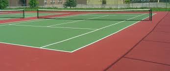
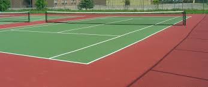

|
 |
| |
 |
Hello newcomers!
A Little Bit About Me. My name is John and I am currently serving Active Duty in the United States Air Force. I am currently stationed overseas in Japan. I initially signed a four year contract and intended to use the GI Bill to return to school. However, halfway through my contract, I was notified of a short tour assignment to Turkey with a follow-on assignment to Japan after. I thought to myself there probably wouldn't be another opportunity for myself to experience and live in Japan, so I decided to jump on the opportunity. Upon accepting the assignment, I had to extend my initial contract out another two and half years (about 30 months).
Being stationed overseas, I currently attend Southwestern College online. I am majoring in Computer Science and will have about five classes remaining after I complete the current semester. Upon completing my undergraduate degree in CS, I am looking to apply for a medical school preparatory program in which I can study full time for two years, completing all the prerequisite courses for medical school, all the while still being paid as if I'm Active Duty. Upon completion of the program and acceptance to medical school (either private or the Uniformed Services University of the Health Sciences), I would be able to commission and continue serving as an officer and physician. This is my end goal.
Here are some links that I visit often!
| Link | Description |
|---|---|
| Tennis Warehouse | Website to purchase tennis racquests, equipment, clothing, etc... |
| Tennis World USA | Website to check up on the latest news in the tennis world |
| Essential Tennis YouTube | YouTube Channel with instructional videos on how to improve |